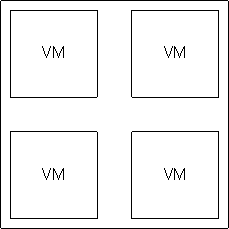
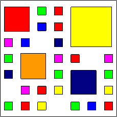

craig.munro@rbs.com
High Performance Computing
External
|
Internal
|
# Use latest base image
FROM rbs/base-jdk:8
MAINTAINER hpc@rbs.com
# install dependencies
RUN yum install maven
# Set Environment variables
ENV WILDFLY_VERSION 9.0.0.Final
ENV JBOSS_HOME /opt/jboss/wildfly
# Add the WildFly distribution to /opt, and make wildfly the owner of the extracted tar content
RUN cd $HOME && curl http://download.jboss.org/wildfly/$WILDFLY_VERSION/wildfly-$WILDFLY_VERSION.tar.gz | tar zx && mv $HOME/wildfly-$WILDFLY_VERSION $HOME/wildfly
# Expose the ports we're interested in
EXPOSE 8080
# Set the default command to run on boot
CMD ["/opt/jboss/wildfly/bin/standalone.sh", "-b", "0.0.0.0"]
Control groups limit the resources each container has access to.
CPU, memory, disk IO, network IO
| Virtual -> Container"> | Virtual -> Container"> | Virtual -> Container"> | |
|---|---|---|---|
| Physical | |||
| Performance | |||
| Utilisation | |||
| Lead Time | |||
| Management | |||
| Agility |
| Virtual -> Container"> |  Virtual -> Container"> | Virtual -> Container"> | |
|---|---|---|---|
| Physical | Virtual | ||
| Performance | |||
| Utilisation | |||
| Lead Time | |||
| Management | |||
| Agility |
| Virtual -> Container"> | Virtual -> Container"> |  Virtual -> Container"> | |
|---|---|---|---|
| Physical | Virtual | Container | |
| Performance | |||
| Utilisation | |||
| Lead Time | |||
| Management | |||
| Agility |
Manage a cluster of linux containers as a single system to accelerate Dev and simplify Ops
1 or more containers
Share volumes, localhost etc.
Routable, IP address
Limit Resources
Ephemeral.
Ensures correct Pods are running
Scaling
Deployment Strategies
Stable, Virtual IP address that load balances across running Pods
Add arbitrary key/value pairs to any object
name=myapp, env=prd, version=1234Services and Replication controllers use Selectors to select correct pods
apiVersion: v1
kind: ReplicationController
metadata:
name: helloworld-1
spec:
template:
metadata:
labels:
name: helloworld
version: version-one
spec:
containers:
- name: helloworld
image: craigmunro/centos-node-hello:1.0
ports:
- containerPort: 8080
resources:
limits:
cpu: 250m
memory: 256Mi
livenessProbe:
tcpSocket:
port: 8080
timeoutSeconds: 1
initialDelaySeconds: 5
nodeSelector:
region: primary
selector:
name: helloworld
version: version-one
replicas: 1
apiVersion: v1
kind: Service
metadata:
name: helloworld
spec:
ports:
- port: 8080
targetPort: 8080
protocol: TCP
selector:
name: helloworld
A template describes a set of objects (Services, Pods, etc) that can be parameterized and processed to create complete applications in OpenShift.
Automatically build application code and combine with centrally managed platform images